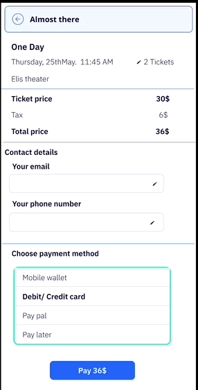

Movie Theater
The Movie Theater app is a user-friendly and comprehensive mobile application designed to enhance the moviegoing experience. It offers a seamless and convenient platform for users to browse the latest movie listings, view showtimes, and purchase tickets effortlessly. With its intuitive interface, users can explore detailed movie information, watch trailers, and read reviews to make informed choices. The app also features a user-friendly seat selection and booking system, allowing patrons to reserve their preferred seats. Additionally, it provides real-time updates on upcoming releases, special promotions, and exclusive deals, making it the ultimate companion for movie enthusiasts, ensuring they have an enjoyable and stress-free cinematic experience.
Project overview
Client: The movie theater in Barcelona wants to offer to the moviegoing different movies in various languages. They didn’t provide that service before so I needed to start from scratch.
Goal: To conduct user research to understand people’s interaction with movie theater app in order to develop a user-friendly app for them.
My Role: UX researcher and designer
Challenges
Problems
Users face issues with the amount of time and effort required for tasks such as searching, browsing, signing up, and finding the movie in their own language during the buying ticket online process. My personas face the following problems when using the movie theater app:
-
Anita is a salesperson who needs an easy app experience to buy tickets online because she doesn’t have time to browse the app and she is not technologically savvy.
-
Bruno is a German bookkeeper who needs to watch a movie in his mother tongue because he doesn’t understand English pretty well.
Hypothesis
Considering these issues, I aim to develop a tool that simplifies the search process with user-friendly features, informative search results, and different movies in different languages. By doing so, users can easily, quickly, and safely find their desired movies. Anita needs an app that allows her to filter her favorite genre and she needs to be notified of her favorite genre via email to have an opportunity to buy the ticket online sooner.
If Anita signs up in the app, then she can utilize the filtering option to view only her favorite genre movies. We believe that filtering option for Anita will allow her to find the favorite genre and buy the ticket online.
Bruno needs an app that allows him to find his favorite movie in his mother tongue, so he can filter the language option to see movies only in his language. We believe that different language options for Bruno will allow him to buy the ticket of their favorite movie.
Research
In the discover stage I focus on understanding the clients, asking broad questions, looking for user challanges, and identifying what they do that I don’t know.
I thought of potential problems, desired outcomes, user types, and challenges. This helped me discover any assumptions I might have about the business and users and figure out ways to test them.
Competitive analysis
To identify potential areas for improvement, I conducted a competitive analysis of 3 prominent movie theater websites before beginning the design phase. By taking screenshots and noting common features, I was able to observe how competitors solve similar problems. By interacting with the websites, I also evaluated potential areas for improvement and feature changes.
User research
After finishing up the competitive analysis, I moved onto user research. I began with a survey, which I sent out on Instagram to be in touch with people. I tried to understand people’s pain points when using the movive theater app. By doing that, I want to design a user friendly app.
I used Instagram to reach a broader range of people of all different ages and backgrounds and understand their experience using app.
Quantitative data: Surveys
I collected 43 surveys from Instagram and friends, which provided many insights about the ways in which users interact with movie theater apps.
| User friendly app | offering different languages | |
|---|---|---|
System story
Based on the insights I got from competitive analysis, I’ve created a system story to form the early requirements of the project.
Personas
Anita
Age: 41
Education: Bachelor’s degree
Hometown: London, England
Family: A boyfriend
Occupation: Salesperson
Goals
Receive an email when her favorite genre is on the theater.
Can easily find her favorite genre without looking at the long page.
Frustrations Spending too much time to find what movie is on the theater recently. Concerned about trusting website for filling out the payment form. She doesn’t know where the good movie theater is located.
Anita is 41 years old who lives in London with her partner. She is a salesperson, and she doesn’t have time to brows on the internet during the week. In her free time, she would like to go to the movie theater, but she doesn’t like to look for her favorite genre for hours. She prefers receiving emails.
Bruno
Age: 32
Education: Student in marketing
Hometown: Edinberg, Scotland
Family: A dog
Occupation: bookkeeper
Goals
Have a movie in his mother tongue as he doesn’t know English pretty well.
Can easily pay the ticket without any trouble in understanding language.
Frustrations English isn’t his mother tongue, so he doesn’t know where and when the movie in his language is in cinema. He wants to have an option to choose his mother tongue.
Bruno is 32 years old who lives in Edinberg with his dog. He is a bookkeeper, and he doesn’t know English well. In his free time, he would like to go to the movie theater, but he knows which cinema has movies in his language.
Working backwards
Figma design
The user flow that I designed at the beginning was having a home screen > search filtering option > select favorite genre > select the movie > buy the ticket > yes > purchase screen > purchase review > select payment method > fill the payment field > purchase confirmation. After user testing, I decided to change the flow and break it down to different scenarios.
Prototyping
Search and browse for first-time users
The first problem that I solved was for Anita who was frequently buying tickets. To help the user to find their favorite genre, I structured the filter option. By that, they can filter based on their favorite genre, actor, and place. They can also easily buy their ticket.

The user doesn’t select location. They can enter the filters to look for their favorite movies.

Book the movies and pay
The user can book their movie based on their favorite genure.

Second-time users
First of all, when the user opens the app, they can see their favorite movie genre, language, and their favorite movie theater. They can select their favorite movie, or they can update their filtering option. So, the app has everything by default for the second user.

The other way to nurture the second-time user is by receiving a pop-up app on their phone about their favorite movie when it is on their favorite movie theater. So, they directed to the app, and they can purchase their ticket less than 3 mins as everything is by default, but they have a chance to update it. Even their favorite snack is by default.

Different movies in different Languages
The other problem I solved is for Bruno who wants to find his movie in his mother tongue. He can filter the movies based on their language.
Payment method
After selecting a movie and their seat, the payment method is by default, they can change it, though.
Pay later

Add food and beverage

Review & comments
The other option that this app offers is giving the user the review of the movies and movie theater. By that, the users can see the others comments to help them to decide easier.

Location option
If they select where they are located, the app offers them the movie and the movie theater near to them.
Sign up profile
If the user sign up in the profile, they can have different options.